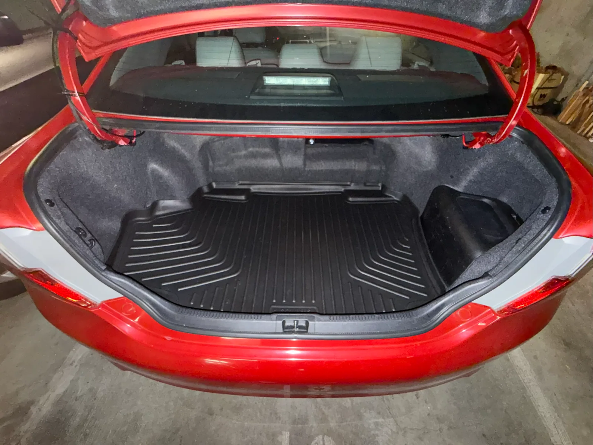
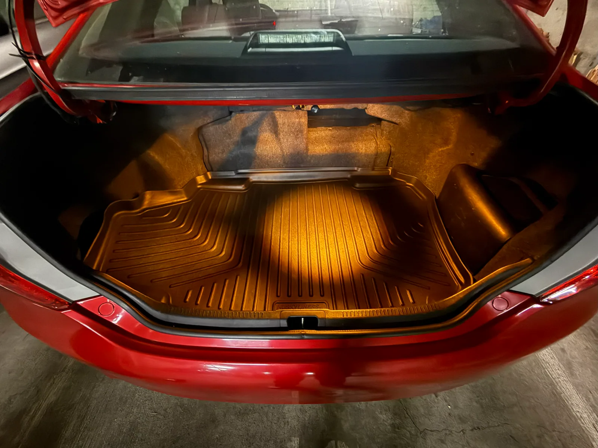
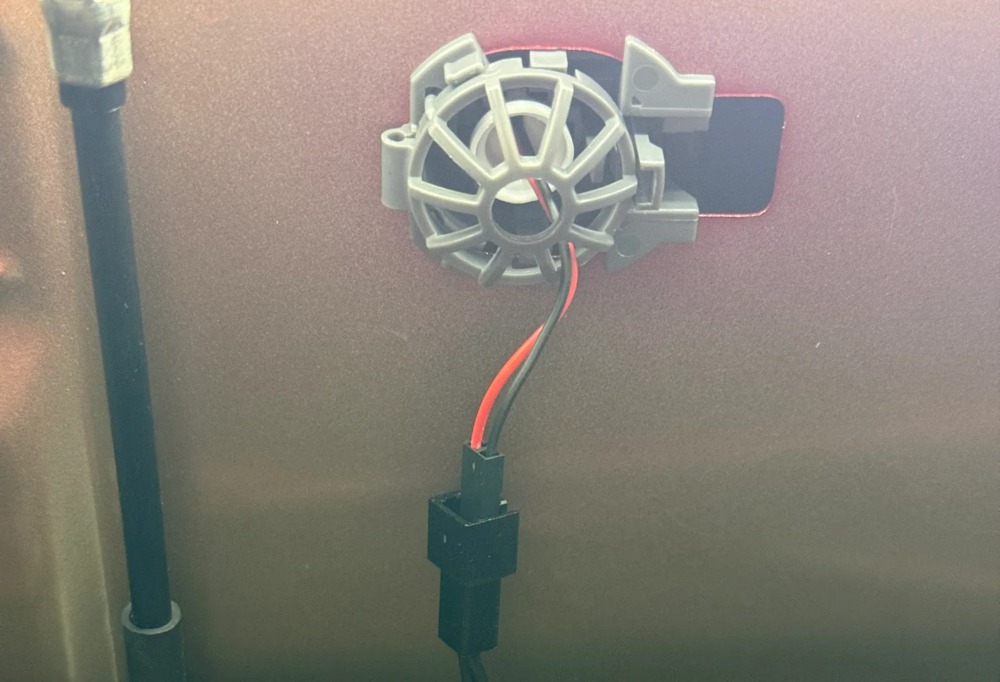
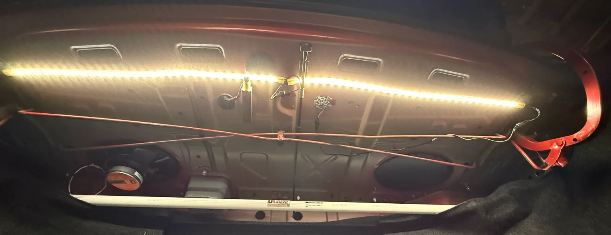
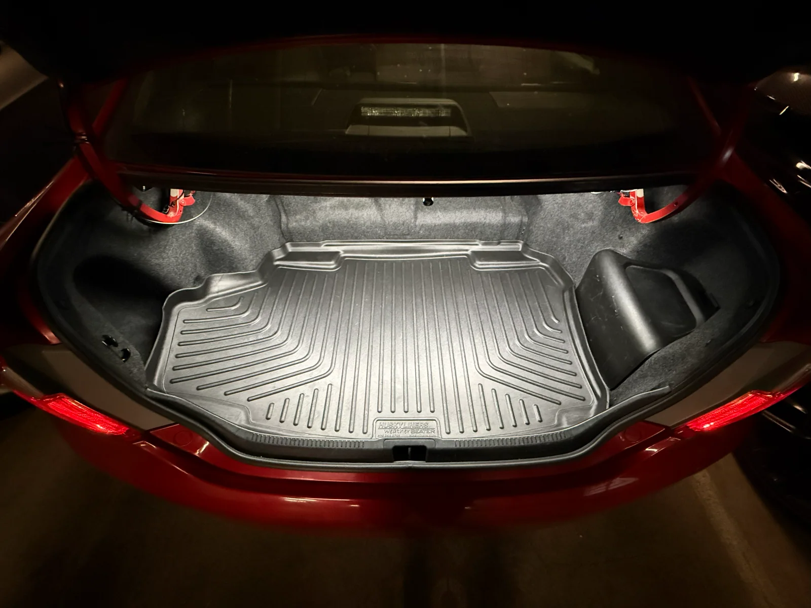

The Ultimate Trunk Lighting for a Toyota Camry
My 2012 Toyota Camry Hybrid XLE has only a single light fixture in the trunk. It’s equipped with the same 7440 bulb as the puddle lights in the front doors and the dome lights above the front windshield. Toyota in their great and endless wisdom felt that a single bulb could light the trunk when four bulbs were required to light an area of the same width, length, and a similar volume in the front. I am here to tell you that Toyota was wrong, and the dark depths of that trunk made it easy to lose things in.

I set out on a quest to bathe this shadow-cursed land with the light of the moon. The first problem was that I only had one light socket to work with. In prior cars that I’ve owned there’s typically a light on both the right and left sides of the cargo area and another light on the underside of the trunk lid or hatch. None of those locations are available in the Camry as the sole light fixture is dead center in the trunk directly under the rear deck. We’ve gotta work with what we’ve got, so I started by installing a higher output light into the T10 socket.

This was better, but more than anything it just clarified how uneven and limited the lighting in the trunk really was. I started poking around on Amazon to look for alternatives like a larger corn-cob style LED light or a flat panel style that would add more surface area and output to the light fixture. What I found was even better, a 10-inch strip of conventional 12-volt LEDs like you would use in a house to light a room or in a kitchen for under cabinet lighting that came along with a socket adapter to convert from the car’s 12-volt T10 socket to the 12 volt 2 wire/2-pin setup that LED strips commonly use. This was a revelation as I could hook almost anything up to this; I was no longer limited to just stuffing the biggest bulb that I could into that socket.

The kit was cheap, so I ordered it and stuck it in the car. It was a real improvement and everything in the trunk was clearly visible now. But I didn’t love the cold 6500k color temperature or how short the strip of LEDs was. I scrounged up a pair of waterproof 5000k LED strips left over from a project in my kitchen (I converted my 12-volt lighting to 48-volt) and installed one on each side of the trunk for a full-width lighting solution. This produced a jaw-droppingly bright trunk space perfect for disassembling a broken camp stove in the wilderness or merely finding that thing that rolled away while I was driving.

And here's the final product:

Using a COB style LED strip where the individual chips aren’t visible with a black PCB and a warmer 3000k color temperature are my only ideas for how this could be improved further, but I’m quite pleased with it as of now. I can see EVERYTHING in this trunk. ✨